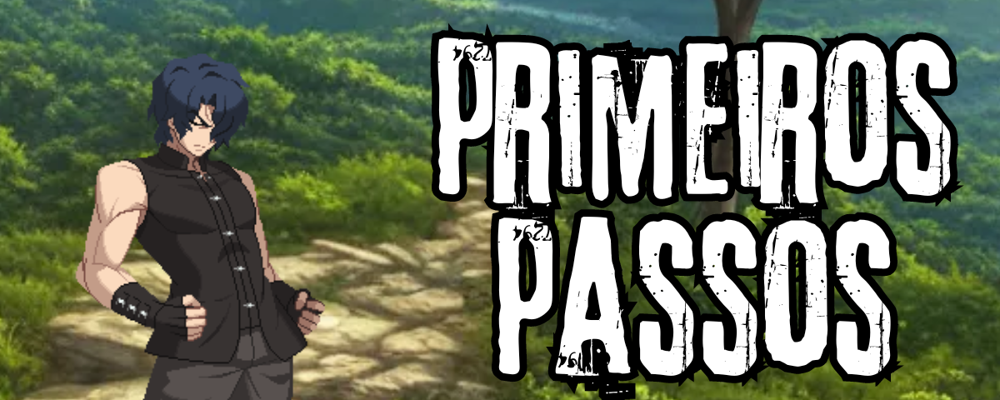
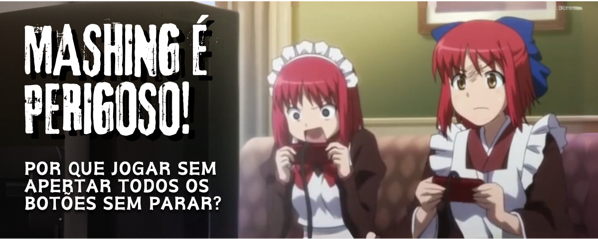
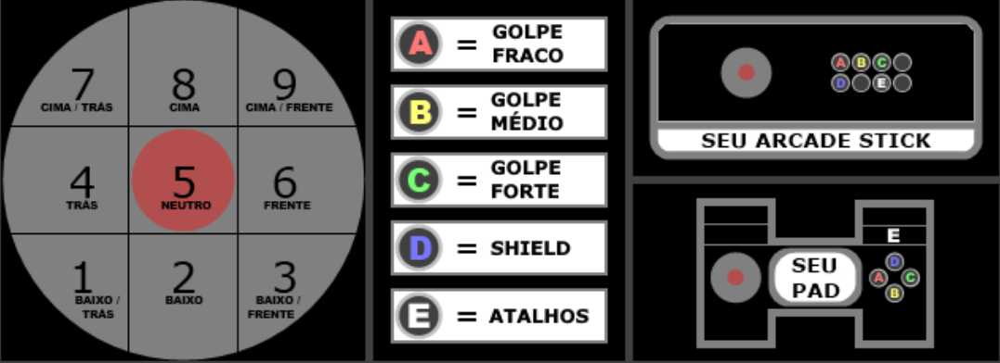
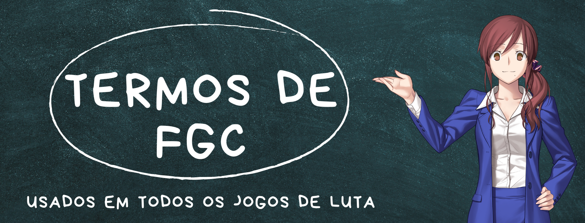

Primeiros passos

Esta página é direcionada para aqueles que estão começando com jogos de luta do absoluto zero.
Ele irá cobrir alguns termos e notações mais utilizados. Todos os termos utilizados com uma abreviação serão devidamente indicados na primeira aparição.
Muitos dos termos utilizados por nós brasileiros em jogos de luta, também chamados de Fighting Games (FGs), se baseiam no inglês, então para quem está familiarizado com a língua isso pode acabar se tornando um processo mais fácil.
Além disso, é importante destacar que o conteúdo do site como um todo já está orientado para seguir as páginas na ordem em que são dispostas, ou seja: primeiro aprendendo sobre os termos utilizados dentro dos jogos de luta, depois entendendo um pouco sobre arquétipos e apresentandos os personagens de Lumina, para enfim seguir com uma apresentação das mecânicas básicas do jogo seguido por fim de um guia com uma série de instruções indicando em quais pontos se deve sempre melhorar, e também indicando como fazer isso para cada um deles.
Por que jogar sem apertar todos os botões sem parar?

Assim como apertar o botão de atirar sem parar em um FPS fará com que você somente gaste sua munição antes de sequer usá-la, fazer o mesmo num jogo de corrida fará com que você pareça um motorista desenfreado. E, como esperado, apertar todos os botões sem parar dentro de um jogo de luta não te fará bem algum caso seu intuito seja evoluir dentro desse gênero.
Esse conceito de apertar botões sem parar é chamado de mash. E afinal, é só pensar numa luta de verdade: se um boxeador com técnicas refinadas luta com alguém que só golpeia aleatoriamente com socos e chutes, essa pessoa certamente irá levar um belo nocaute do profissional.
E é com esse mesmo intuito que a jornada para entender e dominar os jogos de luta merece uma atenção e carinho especial, já que eles possuem um vocabulário delicado com vários termos e aplicações específicas, que serão apresentadas nas seções posteriores desta página.
Notação Utilizada

Notação é como escrevemos os golpes e direções em jogos de luta, de forma a ficar mais fácil e curto para o entendimento dos jogadores.
Também é comum utilizarmos o termo em inglês Numpad Notation para se referir a esse modo de escrita.
Em Melty Blood (assim como muitos outros jogos), chamamos o botão fraco de A, médio de B e forte de C, enquanto o shield é designado para o botão D.
Já as direções são conforme os números do teclado: 2 (baixo), 5 (neutro), 6 (frente), e assim por diante, podendo também ser usado como combinações: 66 indica que você deve apertar duas vezes para frente, por exemplo.
Se um botão estiver dentro de colchetes como um 5[B] , significa que deve ser pressionado mais tempo, de modo a sair, no exemplo dado, a versão carregada do 5B.
Além disso, a letra X também pode ser utilizada como referência quando o botão A, B ou C podem ser utilizados para representar versões diferentes de um mesmo especial, por exemplo.
Alguns movimentos padrões são normalmente usados para especiais nos jogos de luta, como 623X (os DPs, também chamados de shoryuken/punho do dragão), 236X (1/4 de círculo, ou hadouken), entre outros.
Termos utilizados em FGs

Essa seção irá cobrir alguns dos termos mais utilizados quando se fala em jogos de luta. A ordem dos termos e suas definições está seguida de uma forma em que um conceito irá se conectar com outro dentro da medida do possível.
Vale lembrar também que existe um dicionário de jogos de luta (em inglês) que cobre com maior detalhes exemplos gerais e também específicos de jogos/franquias famosas durante esse meio.
Por fim, é importante destacar que não é necessário decorar todos esses termos antes de sequer tocar em um jogo de luta.
Sim, é muito importante aprendê-los, mas eles são usados em paralelo durante o tempo que joga para que assim consiga entender tanto a parte teórica do processo quanto a prática (incluindo dos conteúdos deste site).
| Termo | Definição |
|---|---|
| Specials | Ataques com meia lua, dois para baixo, entre outros comandos, os especiais. |
| EX Specials | Versões mais poderosas dos specials que gastam barra. |
| Normals | Ataques simples ou combinado com apenas um direcional (ex: 6C). |
| Confirm ou Hitconfirm | A habilidade de transformar um hit em um combo. |
| BNBs (Bread n' Butter) | Significa um combo básico, um combo pão com manteiga (ou "arroz com feijão"). |
| Overheads | Ataques vindos do chão que fazem o oponente bloquear de pé para não ser atingido. |
| IAD (Instant Air Dash) | É um comando que faz o airdash sair no primeiro momento possível do pulo, de forma a sair rapidamente e mais rente ao chão. |
| Throws | São os agarrões, utilizados para passar pela defesa do oponente independente de como está bloqueando. |
| Throw tech | Ato de interromper o agarrão do oponente ao apertar o botão de agarrão ao mesmo tempo que ele. |
| Command grabs/throws | Throws que não permitem que o oponente faça throw tech. São lentos porém indefensáveis. |
| Blockstring | Sequência de ataques feitas contra a defesa, composta por normals, throws, specials e overheads. |
| Blockstun | Tempo em que alguém fica travado após defender um ataque. |
| Punish | Punir o inimigo por algum erro que cometeu. |
| Frames | A unidade de tempo nos jogos de luta. Cada frame equivale a 1/60 de um segundo. |
| Frames ativos | Espaço de tempo que um golpe está apto a atingir o oponente. |
| Frame advantage | Usado para informar o quão seguro um golpe é de se usar. Se um golpe é positivo, você poderá agir antes do seu oponente assim que esse golpe acabar, e se for negativo, seu oponente poderá se mover antes de você. |
| Startup | Tempo que demora (geralmente em frames) para um golpe sair e poder atingir o oponente. |
| Recovery | Tempo para poder fazer algo depois de utilizar um golpe (acertando ou não). |
| Cancelar ou "cancel" | Interromper a animação de um golpe em outro golpe ou em pulo. |
| Hitbox | Área de alcance de um golpe. |
| Hurtbox | Área onde o personagem toma dano se atingido por um golpe. |
| Tech | Quando o personagem se recupera de um combo, pelo ar (recuperação/recovery) ou no chão (quicando/bounce). |
| Tech punish | Quando você bate em quem usou tech sem que este possa se defender. |
| Hard knockdown | Uma derrubada que não dá para usar tech. |
| Okizeme ou “oki” | Conjunto de opções de setups e mixups após um hard knockdown. |
| Meaty | Quando um golpe que normalmente tem bastante frames ativos já está ativo na hora que o oponente levanta (no oki), de forma que atinge o oponente no primeiro momento possível. |
| DP | Vem de dragon punch (shoryuken); usado para designar golpe com invencibilidade. Geralmente usados como uma opção de escape agressiva durante um okizeme. |
| Mixup | Mistura de opções feitas em situações específicas para confundir o oponente (feitas após um okizeme, por exemplo). |
| Spacing | Controlar, durante o neutro do jogo, as distâncias para atacar. |
| Whiff | Whiff é quando golpe erra o oponente, pegando no ar. |
| Whiff cancel | Cancelar um golpe mais forte que acerte ou pegue na defesa em um golpe fraco que erre, com a finalidade de ter uma recuperação menor. |
| Whiff punish | Quando se usa o tempo de recuperação do erro (whiff) para contra-atacar. |
Tabela de Conteúdos
Conhecimentos Prévios
Onde devo comprar e jogar? • Notação de Numpad • Por onde começar?
Personagens
Resumo e Arquétipos • Personagens para Iniciantes • Forças e Tier Lists
Básicos
Neutro • Normals • Moon Gauge • Shield • Rebeat • Combos
Avançado
Option Selects • Pensando como um top player